Getting Started#
The opinf package constructs reduced-order models for large dynamical systems.
Such systems often arise from the numerical solution of partial differentials equations.
In this introductory tutorial, we use operator inference to learn a reduced-order model for a simple heat equation.
This is a simplified version of the first numerical example in [PW16].
Problem Statement#
Governing Equations
For the spatial domain \(\Omega = [0,L]\subset \mathbb{R}\) and the time domain \([t_0,t_f]\subset\mathbb{R}\), consider the one-dimensional heat equation with homogeneous Dirichlet boundary conditions:
This is a model for a one-dimensional rod that conducts heat. The unknown state variable \(q(x,t)\) represents the temperature of the rod at location \(x\) and time \(t\); the temperature at the ends of the rod are fixed at \(0\) and heat is allowed to flow out of the rod at the ends.
Objective
Construct a low-dimensional system of ordinary differential equations, called the reduced-order model (ROM), which can be solved rapidly to produce approximate solutions \(q(x, t)\) to the partial differential equation given above. We will use operator inference (OpInf) to learn the ROM from high-fidelity data for one choice of initial condition \(q_0(x)\) and test its performance on new initial conditions.
Training Data#
Define the Full-order Model#
To solve the problem numerically, let \(\{x\}_{i=0}^{n+1}\) be an equidistant grid of \(n+2\) points on \(\Omega\), i.e.,
The boundary conditions prescribe \(q(x_0,t) = q(x_{n+1},t) = 0\). Our goal is to compute \(q(x, t)\) at the interior spatial points \(x_{1}, x_{2}, \ldots, x_{n}\) for various \(t = [0,T]\). we wish to compute the state vector
for \(t\in[t_0,t_f]\).
Introducing a central finite difference approximation for the spatial derivative,
yields the semi-discrete linear system
where
Equation (5) is called the full-order model (FOM) or the high-fidelity model. The computational complexity of solving (5) depends on the dimension \(n\), which must often be large in order for \(\mathbf{q}(t)\) to approximate \(q(x,t)\) well over the spatial grid. Our goal is to construct a ROM that approximates the FOM, but whose computational complexity only depends on some smaller dimension \(r \ll n\).
Important
One key advantage of OpInf is that, because it learns a ROM from data alone, direct access to the high-fidelity solver (the matrix \(\mathbf{A}\) in this case) is not required. In this tutorial, we explicitly construct the high-fidelity solver, but in practice, we only need the following:
Solution outputs of a high-fidelity solver to learn from, and
Some knowledge of the structure of the governing equations.
Solve the Full-order Model#
For this demo, we’ll use \(t_0 = 0\) and \(L = t_f = 1\). We begin by simulating the full-order system described above with the initial condition
using a maximal time step size \(\delta t = 10^{-3}\). This results in \(k = 10^3 + 1 = 1001\) state snapshots (1000 time steps after the initial condition), which are organized as the snapshot matrix \(\mathbf{Q}\in\mathbb{R}^{n\times k}\), where the \(j\)th column is the solution trajectory at time \(t_j\):
Note that the initial condition \(\mathbf{q}_{0}\) is included as a column in the snapshot matrix.
import numpy as np
import pandas as pd
import scipy.linalg as la
import scipy.sparse as sparse
import matplotlib.pyplot as plt
from scipy.integrate import solve_ivp
Show code cell content
# Matplotlib customizations.
plt.rc("axes.spines", right=False, top=False)
plt.rc("figure", dpi=300, figsize=(9, 3))
plt.rc("font", family="serif")
plt.rc("legend", edgecolor="none", frameon=False)
plt.rc("text", usetex=True)
# Pandas display options.
pd.options.display.float_format = "{:.4%}".format
# Construct the spatial domain.
L = 1 # Spatial domain length.
n = 2**7 - 1 # Spatial grid size.
x_all = np.linspace(0, L, n+2) # Full spatial grid.
x = x_all[1:-1] # Interior spatial grid (where q is unknown).
dx = x[1] - x[0] # Spatial resolution.
# Construct the temporal domain.
t0, tf = 0, 1 # Initial and final time.
k = tf*1000 + 1 # Temporal grid size.
t = np.linspace(t0, tf, k) # Temporal grid.
dt = t[1] - t[0] # Temporal resolution.
print(f"Spatial step size δx = {dx}")
print(f"Temporal step size δt = {dt}")
Spatial step size δx = 0.0078125
Temporal step size δt = 0.001
# Construct the full-order state matrix A.
diags = np.array([1,-2,1]) / (dx**2)
A = sparse.diags(diags, [-1,0,1], (n,n))
# Define the full-order model dx/dt = f(t,x), x(0) = x0.
def fom(t, x):
return A @ x
# Construct the initial condition for the training data.
q0 = x * (1 - x)
print(f"shape of A:\t{A.shape}")
print(f"shape of q0:\t{q0.shape}")
shape of A: (127, 127)
shape of q0: (127,)
# Compute snapshots by solving the full-order model with SciPy.
Q = solve_ivp(fom, [t0,tf], q0, t_eval=t, method="BDF", max_step=dt).y
print(f"shape of Q: {Q.shape}")
shape of Q: (127, 1001)
Caution
It is often better to use your own ODE solver instead of integration packages such as scipy.integrate. If the integration strategy of the FOM is known (e.g., Backward Euler), try using that strategy with the ROM.
Visualize Training Data#
Next, we visualize the snapshots to get a sense of how the solution looks qualitatively.
Show code cell source
def plot_heat_data(Z, title, ax=None):
"""Visualize temperature data in space and time."""
if ax is None:
_, ax = plt.subplots(1, 1)
# Plot a few snapshots over the spatial domain.
sample_columns = [0, 2, 5, 10, 20, 40, 80, 160, 320]
color = iter(plt.cm.viridis_r(np.linspace(.05, 1, len(sample_columns))))
leftBC, rightBC = [0], [0]
for j in sample_columns:
q_all = np.concatenate([leftBC, Z[:,j], rightBC])
ax.plot(x_all, q_all, color=next(color), label=fr"$q(x,t_{{{j}}})$")
ax.set_xlim(x_all[0], x_all[-1])
ax.set_xlabel(r"$x$")
ax.set_ylabel(r"$q(x,t)$")
ax.legend(loc=(1.05, .05))
ax.set_title(title)
plot_heat_data(Q, "Snapshot data")
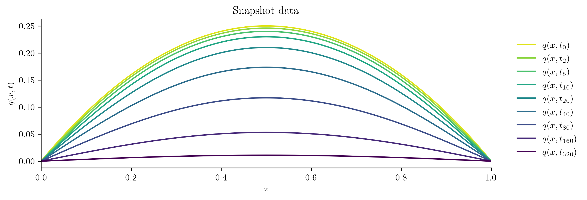
This matches our intuition: initially there is more heat toward the center of the rod, which then diffuses out of the ends of the rod. In the figure, earlier times are lighter colors and later times are darker colors.
At this point, we have gathered some training data by simulating the FOM. We also have an initial condition and space and time domains.
Name |
Symbol |
Code Variable |
|---|---|---|
State snapshots |
\(\mathbf{Q}\) |
|
Initial state |
\(\mathbf{q}_0\) |
|
Spatial variable |
\(\Omega\) |
|
Time domain |
\([t_0,t_f]\) |
|
Operator Inference#
The FOM has the form (5),
with \(\mathbf{q}(t)\in\mathbb{R}^{n}\) and \(\mathbf{A}\in\mathbb{R}^{n\times n}\). Because Galerkin projection preserves the linear structure of the equations, we seek a ROM with a linear structure,
but with \(\hat{\mathbf{q}}(t)\in \mathbb{R}^{r}\) and \(\hat{\mathbf{A}}\in\mathbb{R}^{r\times r}\) for some \(r\ll n\). The high-dimensional and low-dimensional states are related by \(\mathbf{q}(t) \approx \mathbf{V}_{\!r}\hat{\mathbf{q}}(t)\), where \(\mathbf{V}_{\!r}\in\mathbb{R}^{n \times r}\) is called the basis matrix. Operator inference constructs (6) by solving a low-dimensional data-driven minimization for \(\hat{\mathbf{A}}\),
where \(\dot{\mathbf{q}}_{j} := \frac{\text{d}}{\text{d}t}\mathbf{q}(t)\big|_{t = t_j}\) is a measurement of the time derivative of \(\mathbf{q}(t)\) at time \(t = t_{j}\), and \(\mathcal{R}(\hat{\mathbf{A}})\) is a regularization term to stabilize the learning problem. We often abbreviate this problem as
where \(\hat{\mathbf{q}}_{j} = \mathbf{V}_{\!r}^{\mathsf{T}}\mathbf{q}_{j}\) and \(\dot{\hat{\mathbf{q}}}_{j} = \mathbf{V}_{\!r}^{\mathsf{T}}\dot{\mathbf{q}}_{j}\) for \(j=0,\ldots,k-1\).
We have several tasks to consider:
Choosing the dimension \(r\) of the ROM,
Constructing a low-dimensional subspace (computing \(\mathbf{V}_{\!r}\)),
Compressing the state data to the low-dimensional subspace (computing \(\mathbf{V}_{\!r}^{\mathsf{T}}\mathbf{q}_{j}\), \(j=0,\ldots,k-1\)),
Estimating the time derivatives of the state data (computing \(\mathbf{V}_{\!r}^{\mathsf{T}}\dot{\mathbf{q}}_{j}\), \(j=0,\ldots,k-1\)),
Simulating the ROM, and
Evaluating the performance of the ROM.
We will do this all at once, then show each step in more detail.
import opinf
Vr, svdvals = opinf.basis.pod_basis(Q, r=2) # Construct the low-dimensional basis.
Q_ = Vr.T @ Q # Compress the state data to the low-dimensional subspace.
Qdot_ = opinf.ddt.ddt(Q_, dt, order=6) # Estimate the time derivatives of the compressed states.
rom = opinf.models.ContinuousModel("A") # Define the structure of the reduced-order model equations.
solver = opinf.lstsq.L2Solver(regularizer=1e-2) # Select a least-squares solver with regularization.
rom.fit(Q_, Qdot_, solver=solver) # Use operator inference to calibrate the reduced-order model.
q0_ = Vr.T @ q0 # Compress the initial conditions to the low-dimensional subspace.
Q_ROM_ = rom.predict(q0_, t, method="BDF", max_step=dt) # Solve the reduced-order model equations by integrating.
Q_ROM = Vr @ Q_ROM_ # Map the compressed solution back to the original state space.
opinf.post.frobenius_error(Q, Q_ROM)[1] # Compute the relative error of the ROM simulation.
0.0008697294810204858
Choose the Dimension of the ROM#
The integer \(r\), which defines the dimension of the ROM to be constructed, is usually determined by how quickly the singular values \(\{\sigma_j\}_{j=1}^{n}\) of the snapshot matrix \(\mathbf{Q}\) decay. Fast singular value decay is a good sign that a ROM may be successful with this kind of data; if the singular values do not decay quickly, then we may need a large \(r\) to capture the behavior of the system.
The function opinf.basis.pod_basis() uses scipy.linalg.svdvals() to calculate the singular values.
import opinf
V, svdvals = opinf.basis.pod_basis(Q)
svdvals
Show code cell output
array([1.47648749e+01, 1.53235176e-01, 1.25622209e-02, 2.12486479e-03,
4.63029238e-04, 9.84467560e-05, 1.96103816e-05, 3.57374336e-06,
6.25874285e-07, 1.06648553e-07, 1.72950833e-08, 2.41769677e-09,
6.16465727e-10, 1.24203884e-10, 3.07575899e-11, 3.01755395e-12,
5.83773651e-13, 1.85801863e-13, 3.37449599e-14, 3.94471469e-15,
1.47385092e-15, 1.47385092e-15, 1.47385092e-15, 1.47385092e-15,
1.47385092e-15, 1.47385092e-15, 1.47385092e-15, 1.47385092e-15,
1.47385092e-15, 1.47385092e-15, 1.47385092e-15, 1.47385092e-15,
1.47385092e-15, 1.47385092e-15, 1.47385092e-15, 1.47385092e-15,
1.47385092e-15, 1.47385092e-15, 1.47385092e-15, 1.47385092e-15,
1.47385092e-15, 1.47385092e-15, 1.47385092e-15, 1.47385092e-15,
1.47385092e-15, 1.47385092e-15, 1.47385092e-15, 1.47385092e-15,
1.47385092e-15, 1.47385092e-15, 1.47385092e-15, 1.47385092e-15,
1.47385092e-15, 1.47385092e-15, 1.47385092e-15, 1.47385092e-15,
1.47385092e-15, 1.47385092e-15, 1.47385092e-15, 1.47385092e-15,
1.47385092e-15, 1.47385092e-15, 1.47385092e-15, 1.47385092e-15,
1.47385092e-15, 1.47385092e-15, 1.47385092e-15, 1.47385092e-15,
1.47385092e-15, 1.47385092e-15, 1.47385092e-15, 1.47385092e-15,
1.47385092e-15, 1.47385092e-15, 1.47385092e-15, 1.47385092e-15,
1.47385092e-15, 1.47385092e-15, 1.47385092e-15, 1.47385092e-15,
1.47385092e-15, 1.47385092e-15, 1.47385092e-15, 1.47385092e-15,
1.47385092e-15, 1.47385092e-15, 1.47385092e-15, 1.47385092e-15,
1.47385092e-15, 1.47385092e-15, 1.47385092e-15, 1.47385092e-15,
1.47385092e-15, 1.47385092e-15, 1.47385092e-15, 1.47385092e-15,
1.47385092e-15, 1.47385092e-15, 1.47385092e-15, 1.47385092e-15,
1.47385092e-15, 1.47385092e-15, 1.47385092e-15, 1.47385092e-15,
1.47385092e-15, 1.47385092e-15, 1.47385092e-15, 1.47385092e-15,
1.47385092e-15, 1.47385092e-15, 1.47385092e-15, 1.47385092e-15,
1.47385092e-15, 1.47385092e-15, 1.47385092e-15, 1.47385092e-15,
1.47385092e-15, 1.47385092e-15, 1.47385092e-15, 1.47385092e-15,
1.47385092e-15, 1.47385092e-15, 1.47385092e-15, 1.47385092e-15,
1.47385092e-15, 1.47385092e-15, 1.47385092e-15])
The function opinf.basis.svdval_decay() determines the number of (normalized) singular values that are greater than a given tolerance. It can also be used to plot the singular value decay.
import opinf
tolerance = 1e-6
r = opinf.basis.svdval_decay(svdvals, tol=tolerance, normalize=True, plot=True)
plt.xlim(right=60)
plt.show()
print(f"{r:d} normalized singular values are greater than 10^({int(np.log10(tolerance)):d})")
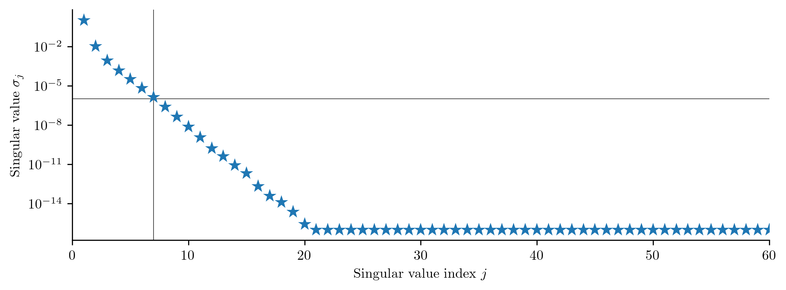
7 normalized singular values are greater than 10^(-6)
We can also look at the relative contribution of the singular values, i.e., choose \(r\) such that the cumulative energy
is greater than a given value (usually something very close to 1).
This can be calculated with opinf.basis.cumulative_energy().
kappa = .999999
r = opinf.basis.cumulative_energy(svdvals, kappa, plot=False)
print(f"r = {r:d} singular values exceed {kappa:.4%} energy")
r = 2 singular values exceed 99.9999% energy
This indicates that we can capture 99.9999% of the behavior of the full-order state snapshots with only 2 modes. So for now, we’ll fix \(r = 2\).
Construct a Low-dimensional Subspace#
Next, we need a basis matrix \(\mathbf{V}_{r}\in\mathbb{R}^{n \times r}\) to define the linear subspace to which the ROM states will be confined. One of the most standard strategies, which aligns with our analysis of the singular values of \(\mathbf{Q}\), is the POD basis of rank \(r\) corresponding to \(\mathbf{Q}\). If \(\mathbf{Q}\) has the singular value decomposition
then the POD basis of rank \(r\) consists of the first \(r\) columns of \(\boldsymbol{\Phi}\), i.e., the dominant \(r\) left singular vectors of \(\mathbf{Q}\):
The matrix \(\mathbf{V}_{r}\) is the first return value of opinf.basis.pod_basis().
r = 2
# Extract the first r singular vectors from the matrix computed earlier.
Vr = V[:, :r]
# Or, compute the basis from scratch.
Vr, svdvals = opinf.basis.pod_basis(Q, r, mode="dense")
print(f"Shape of Vr: {Vr.shape}")
Shape of Vr: (127, 2)
To get a sense of the kinds of solutions we may see, we plot the columns of \(\mathbf{V}_r\). All solutions of the resulting ROM can only be linear combinations of these columns.
for j in range(Vr.shape[1]):
plt.plot(x_all, np.concatenate(([0], Vr[:,j], [0])), label=f"POD mode {j+1}")
plt.legend(loc="upper right")
plt.show()
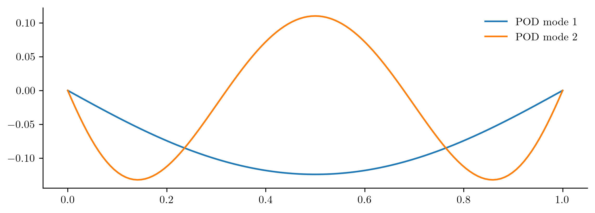
Tip
The opinf.basis.PODBasis class conveniently combines basis construction and dimension selection. The opinf.basis.PODBasis.fit() method receives the state matrix \(\mathbf{Q}\) and either the desired reduced dimension \(r\) or a threshold value for selecting \(r\) based on the cumulative or residual energy.
The next tutorial uses opinf.basis.PODBasis instead of opinf.basis.pod_basis().
Estimate Time Derivatives#
Operator inference constructs a ROM by solving a least-squares regression problem. In this case, the ROM has the form \(\frac{\text{d}}{\text{d}t}\hat{\mathbf{q}}(t) = \hat{\mathbf{A}}\hat{\mathbf{q}}(t)\). The snapshot matrix \(\mathbf{Q} \in \mathbb{R}^{n \times k}\) contains data for \(\mathbf{q}(t)\), which can be compressed as \(\hat{\mathbf{Q}} = \mathbf{V}_{\!r}^{\mathsf{T}}\mathbf{Q} \in \mathbb{R}^{r \times k}\) to get data for \(\hat{\mathbf{q}}(t)\), but we also need data for \(\frac{\text{d}}{\text{d}t}\mathbf{q}(t)\). In this simple example, we can directly compute the snapshot time derivative matrix \(\dot{\mathbf{Q}}\in\mathbb{R}^{n\times k}\) that corresponds to the snapshots by setting \(\dot{\mathbf{Q}} = \mathbf{A} \mathbf{Q}\), then compute the compression \(\dot{\hat{\mathbf{Q}}} = \mathbf{V}_{\!r}^{\mathsf{T}}\dot{\mathbf{Q}} \in \mathbb{R}^{r \times k}\).
Qdot = A @ Q
print(f"Shape of Q:\t{Q.shape}")
print(f"Shape of Qdot:\t{Qdot.shape}")
Shape of Q: (127, 1001)
Shape of Qdot: (127, 1001)
If the matrix \(\mathbf{A}\) is unknown or computationally unavailable, the time derivative matrix can be estimated through finite differences of the snapshots.
The opinf.ddt submodule has some convenience tools for this.
Since our time domain is uniformly spaced, we use opinf.ddt.ddt_uniform(); for snapshots that are not uniformly spaced in time, see opinf.ddt.ddt_nonuniform().
Qdot2 = opinf.ddt.ddt_uniform(Q, dt, order=6)
# Check that the estimate is close to the true time derivatives.
la.norm(Qdot - Qdot2, ord=np.inf) / la.norm(Qdot, ord=np.inf)
0.004826536027917285
# Compress the time derivative data to the low-dimensional subspace.
Qdot_ = Vr.T @ Qdot
Tip
The finite difference approximation for \(\dot{\mathbf{Q}}\) commutes with the encoding in a low-dimensional subspace, that is, \(\mathbf{V}_{r}^\top\frac{\text{d}}{\text{d}t}\left[\mathbf{Q}\right] = \frac{\text{d}}{\text{d}t}\left[\mathbf{V}_{r}^{\top}\mathbf{Q}\right]\). To save memory, the snapshot matrix may be compressed first, and the time derivatives can be calculated from the compressed snapshots. The ROM classes in the next section accept both full-order (\(n \times k\)) or reduced-order (\(r\times k\)) snapshot and time derivative matrices as training data.
>>> Q_ = Vr.T @ Q # Compress the state snapshots.
>>> Qdot_ = opinf.ddt.ddt_uniform(Q_, dt, order=6) # Estimate time derivatives of compressed states.
>>> np.allclose(Vr.T @ Qdot2, Qdot_) # Same as compressing the full-order time derivatives.
True
Infer Reduced-order Operators#
We now have training data and a linear basis for a low-dimensional subspace.
Name |
Symbol |
Code Variable |
|---|---|---|
State snapshots |
\(\mathbf{Q}\) |
|
Time derivatives |
\(\dot{\mathbf{Q}}\) |
|
POD basis |
\(\mathbf{V}_{r}\) |
|
Initial state |
\(\mathbf{q}_0\) |
|
Spatial domain |
\(\Omega\) |
|
Time domain |
\([t_0,t_f]\) |
|
Next, we initialize a model and fit it to the data.
Since the problem is continuous (time-dependent), we use the model class opinf.models.ContinuousModel.
The constructor receives a list of operators that define the structure of the right-hand side of the model.
For the model (6), we use an opinf.operators.LinearOperator to represent the term \(\hat{\mathbf{A}}\hat{\mathbf{q}}(t)\).
rom = opinf.models.ContinuousModel(operators=[opinf.operators.LinearOperator()])
print(rom)
Model structure: dq / dt = Aq(t)
We now fit the model to the data by solving the least-squares problem (7). Without regularization (\(\mathcal{R} \equiv 0\)), this can be written as
where
This is all done in the opinf.models.ContinuousModel.fit() method, given \(\hat{\mathbf{Q}}\) and \(\dot{\hat{\mathbf{Q}}}\).
rom.fit(states=Q_, ddts=Qdot_)
<ContinuousModel object at 0x13072a950>
Model structure: dq / dt = Aq(t)
State dimension r = 2
After fitting the model, we can directly examine the inferred operators of the model.
rom.operators[0].entries
array([[ -9.87392047, -0.62781559],
[ -0.62781559, -92.6077519 ]])
Tip
The first opinf.operators.LinearOperator object in the list of model operators is accessible via the shortcut A_.
>>> rom.operators[0] is rom.A_
True
Because this is such a simple problem, OpInf recovers the exact same operator \(\hat{\mathbf{A}}\) as intrusive projection, i.e., \(\widetilde{\mathbf{A}} = \mathbf{V}_r^{\top} \mathbf{A} \mathbf{V}_r\):
A_intrusive = Vr.T @ A @ Vr
A_intrusive
array([[ -9.87392047, -0.62781559],
[ -0.62781559, -92.6077519 ]])
np.allclose(rom.A_.entries, A_intrusive)
True
Regularization: Stabilizing the Inference Problem#
Solving (7) numerically can be challenging due to ill-conditioning in the data, errors in the estimation of the time derivatives, or overfitting.
The inference problem therefore often requires a regularization strategy to obtain a solution that respects both the training data and the physics of the problem.
One common option, implemented by this package, is Tikhonov regularization, which sets \(\mathcal{R}(\hat{\mathbf{A}}) = \|\lambda\hat{\mathbf{A}}\|_{F}^{2}\) in (7) to penalize the entries of the learned operators.
The scalar \(\lambda\) can be included as the solver keyword argument to opinf.models.ContinuousModel.fit().
rom.fit(Q_, Qdot_, solver=opinf.lstsq.L2Solver(regularizer=1e-2))
rom.A_.entries
array([[ -9.87391594, -0.62515321],
[ -0.6278153 , -92.21503032]])
np.allclose(rom.A_.entries, A_intrusive)
False
Note
With \(\lambda = 10^{-2}\), OpInf differs from the intrusive operator \(\widetilde{\mathbf{A}}\). However, we will see in the next section that the ROM produced by OpInf is highly accurate. In fact, it is sometimes the case that OpInf outperforms intrusive projection.
Important
Regularization is important in all but the simplest OpInf problems.
If OpInf produces an unstable ROM, try different values for the regularizer.
See [MHW21] for an example of a principled choice of regularization for a combustion problem.
Simulate the Learned ROM#
Once the model is fit, we may simulate the ROM with the opinf.models.ContinuousModel.predict(), which wraps scipy.integrate.solve_ivp().
This method takes an initial condition for the model \(\hat{\mathbf{q}}_0 = \mathbf{V}_{\!r}^{\mathsf{T}}\mathbf{q}_0\), the time domain over which to record the solution, and any additional arguments for the integator.
q0_ = Vr.T @ q0 # Compress the initial conditions.
Q_ROM_ = rom.predict(q0_, t, method="BDF", max_step=dt)
Q_ROM_.shape
(2, 1001)
The solution is still in the low-dimensional space; it can be mapped to the original state space by applying \(\mathbf{V}_{\!r}\).
Q_ROM = Vr @ Q_ROM_
Q_ROM.shape
(127, 1001)
Tip
opinf.models.ContinuousModel.predict() is convenient, but scipy.integrate.solve_ivp() implements relatively few time integration schemes.
However, the ROM can be simulated by any ODE solver scheme by extracting the inferred operator \(\hat{\mathbf{A}}\).
If solver(A, q0) were a solver for systems of the form \(\frac{\text{d}}{\text{d}t}\hat{\mathbf{q}} = \hat{\mathbf{A}}\hat{\mathbf{q}}(t),\ \hat{\mathbf{q}}(0) = \hat{\mathbf{q}}_0\), we could simulate the ROM with the following code.
q0_ = Vr.T @ q0 # Compress the initial conditions.
Q_ROM_ = solver(rom.A_.entries, q0_) # Solve the ROM in the reduced space.
Q_ROM = Vr @ Q_ROM_ # Decompress the ROM solutions.
More generally, the method opinf.models.ContinuousModel.rhs() represents the right-hand side of the model, the \(\hat{\mathbf{f}}\) of \(\frac{\text{d}}{\text{d}t}\hat{\mathbf{q}}(t) = \hat{\mathbf{f}}(t, \hat{\mathbf{q}}(t))\).
All-purpose integrators can therefore be applied to the function opinf.models.ContinuousModel.rhs().
Evaluate ROM Performance#
To see how the ROM does, we begin by visualizing the simulation output Q_ROM.
It should look similar to the plot of the snapshot data Q.
fig, [ax1, ax2] = plt.subplots(1, 2)
plot_heat_data(Q, "Snapshot data", ax1)
plot_heat_data(Q_ROM, "ROM state output", ax2)
ax1.legend([])
plt.show()
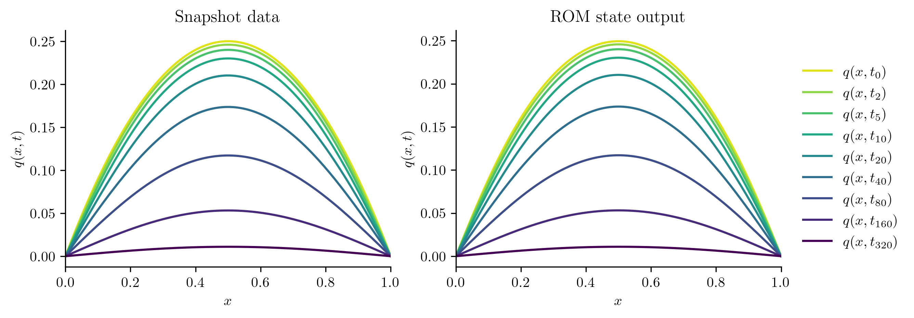
For more detail, we evaluate the \(\ell^2\) error of the ROM output in time, comparing it to the snapshot set via opinf.post.lp_error().
abs_l2err, rel_l2err = opinf.post.lp_error(Q, Q_ROM)
plt.semilogy(t, abs_l2err)
plt.title(r"Absolute $\ell^{2}$ error")
plt.show()
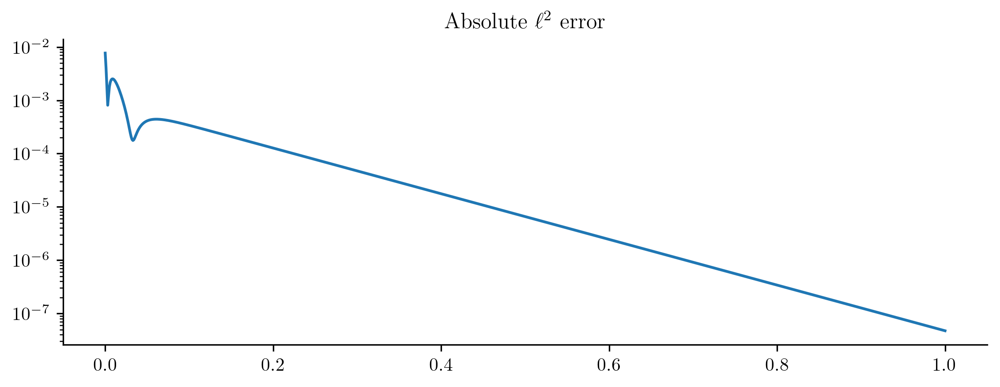
In this simple example, the error decreases with time (as solutions get quickly pushed to zero), but this is not the kind of error behavior that should be expected for less trivial systems.
We can also get a scalar error measurement by calculating the relative Frobenius norm error with opinf.post.frobenius_error().
abs_froerr, rel_froerr = opinf.post.frobenius_error(Q, Q_ROM)
print(f"Relative Frobenius-norm error: {rel_froerr:%}")
Relative Frobenius-norm error: 0.087009%
In other words, the ROM simulation is within 0.1% of the snapshot data. Note that this value is very close to the projection error that we calculated earlier.
Prediction: New Initial Conditions#
The ROM was trained using only data corresponding to the initial condition \(q_0(x) = x(1 - x).\) We’ll now test the ROM on the following new initial conditions and compare the results to the corresponding FOM solution:
Before we compute the ROM error, we also compute the projection error of the new initial condition,
If this projection error is large, then the new initial condition cannot be represented well within the range of \(\mathbf{V}_{r}\). This will be apparent in the ROM solutions.
First Attempt#
def test_new_initial_condition(q0, Vr, rom, label=None):
"""Compare full-order model and reduced-order model solutions for a given
inititial condition.
Parameters
----------
q0 : (n,) ndarray
Heat equation initial conditions q0(x) to be tested.
Vr : (n, r) ndarray
Basis matrix.
rom : opinf.models.ContinuousModel
Trained reduced-order model object.
label : str
LaTeX description of the initial condition being tested.
"""
# Calculate the projection error of the new initial condition.
rel_projerr = opinf.basis.projection_error(q0, Vr)[1]
# Solve the full-order model (FOM) and the reduced-order model (ROM).
Q_FOM = solve_ivp(fom, [t0,tf], q0, t_eval=t, method="BDF", max_step=dt).y
Q_ROM = Vr @ rom.predict(Vr.T @ q0, t, method="BDF", max_step=dt)
# Plot the FOM and ROM solutions side by side.
fig, [ax1, ax2] = plt.subplots(1, 2)
plot_heat_data(Q_FOM, "Full-order model solution", ax1)
plot_heat_data(Q_ROM, "Reduced-order model solution", ax2)
ax1.legend([])
if label:
fig.suptitle(label, y=1)
fig.tight_layout()
# Calculate the ROM error in the Frobenius norm.
abs_froerr, rel_froerr = opinf.post.frobenius_error(Q_FOM, Q_ROM)
# Report results.
plt.show()
print(f"Relative projection error of initial condition: {rel_projerr:.2%}",
f"Relative Frobenius-norm ROM error: {rel_froerr:.2%}", sep='\n')
return rel_projerr, rel_froerr
Show code cell source
q0_new = [
10 * x * (1 - x),
x**2 * (1 - x)**2,
x**4 * (1 - x)**4,
np.sqrt(x * (1 - x)),
np.sqrt(np.sqrt(x * (1 - x))),
np.sin(np.pi * x) + np.sin(5 * np.pi * x) / 5,
]
q0_titles = [
r"$q_{0}(x) = 10 x (1 - x)$",
r"$q_{0}(x) = x^{2} (1 - x)^{2}$",
r"$q_{0}(x) = x^{4} (1 - x)^{4}$",
r"$q_{0}(x) = \sqrt{x (1 - x)}$",
r"$q_{0}(x) = \sqrt[4]{x (1 - x)}$",
r"$q_{0}(x) = \sin(\pi x) + \frac{1}{5}\sin(5\pi x)$",
]
results = {}
for i, [q00, title] in enumerate(zip(q0_new, q0_titles)):
results[f"Experiment {i+1:d}"] = test_new_initial_condition(q00, Vr, rom, f"Experiment {i+1}: {title}")
labels = [
"Relative projection error of initial condition",
"Relative Frobenius-norm ROM error"
]
pd.DataFrame(results, index=labels).T
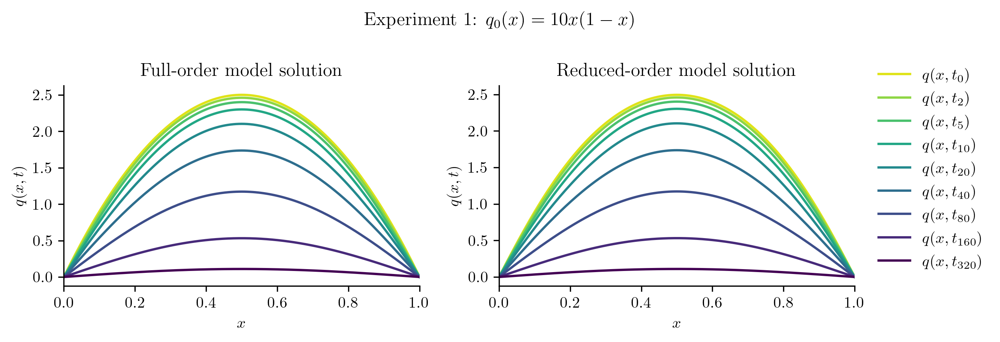
Relative projection error of initial condition: 0.37%
Relative Frobenius-norm ROM error: 0.09%
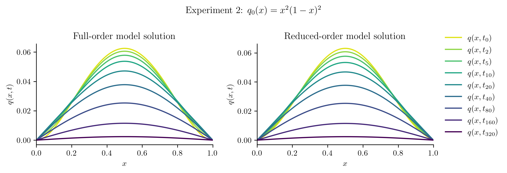
Relative projection error of initial condition: 1.63%
Relative Frobenius-norm ROM error: 0.43%
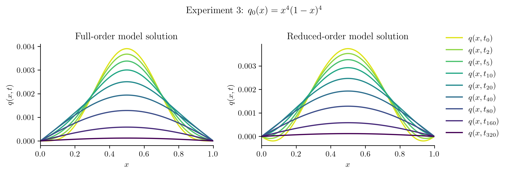
Relative projection error of initial condition: 6.19%
Relative Frobenius-norm ROM error: 2.14%
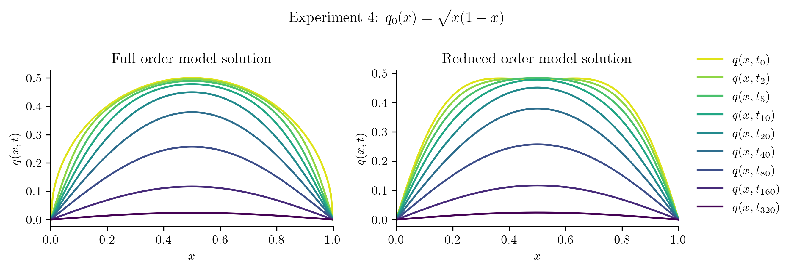
Relative projection error of initial condition: 7.80%
Relative Frobenius-norm ROM error: 1.40%
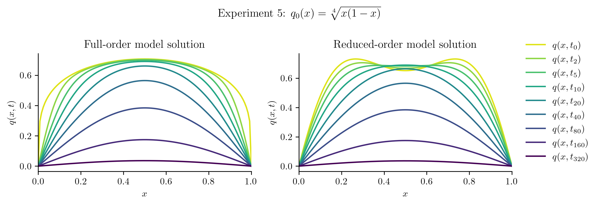
Relative projection error of initial condition: 15.36%
Relative Frobenius-norm ROM error: 2.76%
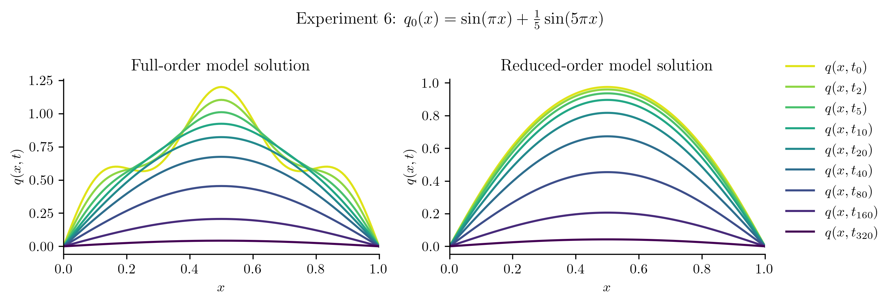
Relative projection error of initial condition: 19.45%
Relative Frobenius-norm ROM error: 4.48%
| Relative projection error of initial condition | Relative Frobenius-norm ROM error | |
|---|---|---|
| Experiment 1 | 0.3719% | 0.0870% |
| Experiment 2 | 1.6263% | 0.4328% |
| Experiment 3 | 6.1887% | 2.1401% |
| Experiment 4 | 7.7979% | 1.3968% |
| Experiment 5 | 15.3559% | 2.7580% |
| Experiment 6 | 19.4538% | 4.4795% |
Second Attempt: a Better Basis#
The ROM performs well for \(q_{0}(x) = 10x(1 - x)\), which is unsurprising because this new initial condition is a scalar multiple of the initial condition used to generate the training data. In other cases, the ROM is less successful because the new initial condition cannot be represented well in the range of the basis \(\mathbf{V}_{\!r}\). For example:
Show code cell source
fig, axes = plt.subplots(1, 2)
for j, ax in zip([4, 5], axes):
ax.plot(x_all, np.concatenate(([0], q0_new[j], [0])),
label=r"True initial condition ($\mathbf{q}_{0}$)")
ax.plot(x_all, np.concatenate(([0], Vr @ (Vr.T @ q0_new[j]), [0])), "--",
label=r"Basis approximation of initial condition ($\mathbf{V}_{r}\mathbf{V}_{r}^{\mathsf{T}}\mathbf{q}_{0}$)")
ax.set_title(f"Experiment {j+1:d}")
fig.tight_layout(rect=[0, .15, 1, 1])
axes[0].legend(loc="lower center", fontsize="large",
bbox_to_anchor=(.5, -.05), bbox_transform=fig.transFigure)
plt.show()
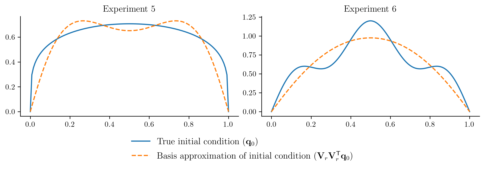
To improve the ROM performace without getting new data from the FOM, we will enrich the basis by
Including the new initial conditions in the basis computation, and
Using a few more basis vectors (we currently have \(r = 2\), let’s use \(r = 5\)).
# Get a new, slightly larger POD basis and include the new initial conditions.
r = 5
Q_and_new_q0s = np.column_stack((Q, *q0_new))
Vr_new, svdvals_new = opinf.basis.pod_basis(Q_and_new_q0s, r, mode="dense")
# Plot the singular value decay and the first few basis vectors.
fig, [ax1, ax2] = plt.subplots(1, 2)
opinf.basis.svdval_decay(svdvals_new, 1e-4, plot=True, ax=ax1)
ax1.set_xlim(right=40)
for j in range(Vr_new.shape[1]):
ax2.plot(x, Vr_new[:,j], label=f"POD mode {j+1}")
ax2.legend(ncol=2)
plt.show()
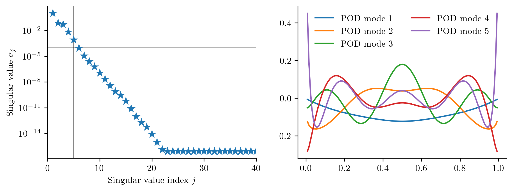
# Update the training data and solve the corresponding inference problem
# (but only using snapshot data from one initial condition).
rom.fit(Vr_new.T @ Q, Vr_new.T @ Qdot)
# Repeat the experiments.
results_new = {}
for i, [q00, title] in enumerate(zip(q0_new, q0_titles)):
results_new[f"Experiment {i+1:d}"] = test_new_initial_condition(q00, Vr_new, rom, f"Experiment {i+1}: {title}")
# Display results summary.
pd.DataFrame(results_new, index=labels).T
Relative projection error of initial condition: 0.00%
Relative Frobenius-norm ROM error: 0.02%
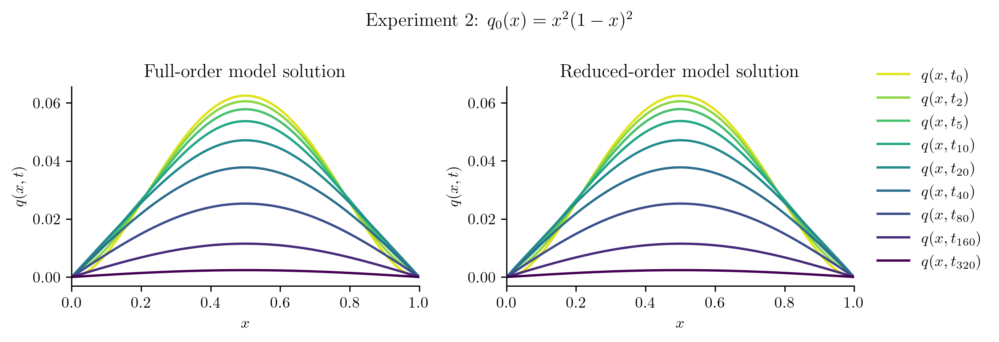
Relative projection error of initial condition: 0.02%
Relative Frobenius-norm ROM error: 0.08%
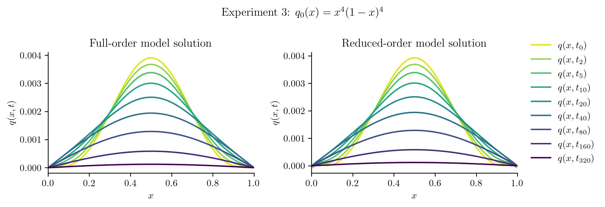
Relative projection error of initial condition: 0.96%
Relative Frobenius-norm ROM error: 0.32%
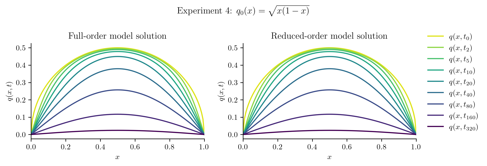
Relative projection error of initial condition: 0.01%
Relative Frobenius-norm ROM error: 0.12%
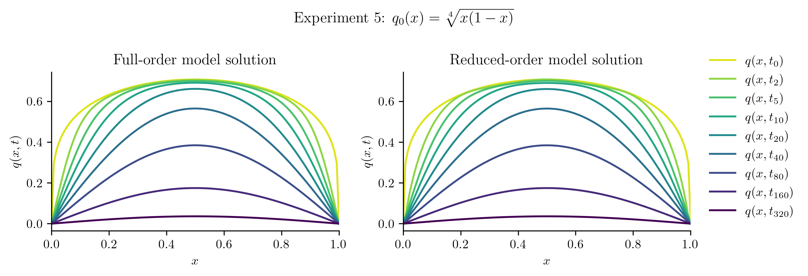
Relative projection error of initial condition: 0.00%
Relative Frobenius-norm ROM error: 0.22%
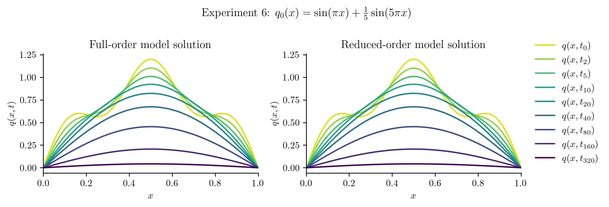
Relative projection error of initial condition: 0.00%
Relative Frobenius-norm ROM error: 0.12%
| Relative projection error of initial condition | Relative Frobenius-norm ROM error | |
|---|---|---|
| Experiment 1 | 0.0031% | 0.0153% |
| Experiment 2 | 0.0157% | 0.0764% |
| Experiment 3 | 0.9561% | 0.3206% |
| Experiment 4 | 0.0112% | 0.1186% |
| Experiment 5 | 0.0018% | 0.2228% |
| Experiment 6 | 0.0001% | 0.1189% |
With a more expressive basis, we are now capturing the true solutions with the ROM to within 1% error in the Frobenius norm.
Takeaway
This example illustrates an fundamental principle of model reduction: the accuracy of the ROM is limited by the accuracy of the underlying low-dimensional approximation, which in this case is \(\mathbf{q}(t) \approx \mathbf{V}_{r}\hat{\mathbf{q}}(t)\). In other words, a good \(\mathbf{V}_{r}\) is critical in order for the ROM to be accurate and predictive.